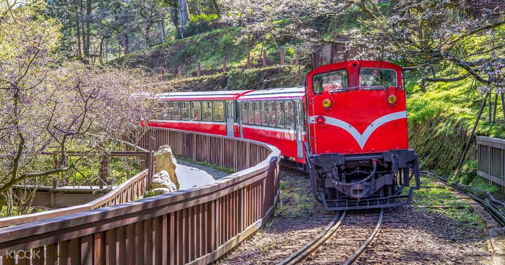

阿里山森林鐵路(小火車)
Alishan Forest Railway
地址：嘉義市東區共和路428號
全線自海拔30公尺的嘉義，一路爬升至2,216公尺高的阿里山，全程經過47個隧道、72座橋，沿途可欣賞熱、暖、溫等不同森林帶之植物種類變化與美麗的山脈、溪谷。阿里山森林鐵路分為平地與山地兩線段，前者指嘉義至竹崎（14.2公里），後者為竹崎至阿里山線段（57.2公里）。
當火車以推進方式運轉至獨立山時，為遷就急峻的山形，則須以螺旋型環繞獨立山三周（約五公里長、兩百公尺高）而至山頂。當迴旋上山時，在車上可三度看到忽左忽右的樟腦寮車站仍在山下，然後鐵道再以8字型方式離開獨立山。而自屏遮那站到第一分道後，鐵路呈z字型曲折前進，經過三個分道時，火車時而往前拖、時而在後推，終抵阿里山，故有「阿里山火車碰壁之稱」。
更多介紹：